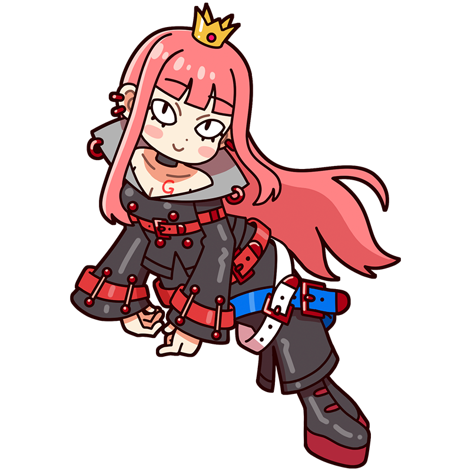

Ha ha ha ha!
Bow down before history!
Gerard
Upon the canvas layered with history,
the jet-black queen smiles eerily.
A muse who gained popularity during the Neoclassical era and was even called the “Queen” alongside David. She is also David’s talented protégé and works behind the scenes as her right-hand woman. It is said that she is very fond of her two younger brothers.
Style
Hometown
Papal States (present-day Italy)
Classics
"Cupid and Psyche"
"Portrait of Juliette Récamier"
"Napoleon I as Emperor" etc.
This is the Gerard piece!
Cupid and Psyche
Psyche, a mortal woman whose extraordinary beauty aroused the jealousy of Venus, the goddess of love. Venus ordered her son Cupid to torment her, but Cupid accidentally shot himself with an arrow of love and fell in love with Psyche. The fable of Cupid and Psyche from Greek mythology is a classic tale that has often been used to depict romance. Gérard depicts the two reveling in their love, yet the gray cloud looming in the far right corner seems to foreshadow the many hardships that will soon befall them.
Year
1798
Medium
Oil on canvas
Dimension
186 cm x 132 cm
Collection
Louvre Museum
（France)
Who is Gerard?
Francois Gerard
A leading painter of French Neoclassicism. He excelled particularly in portraits of emperors and nobility, earning the title “Painter of Kings, King of Painters.” Alongside his mentor David, he served as an official court painter to Napoleon, and his portraits of Napoleon are widely recognized. In his later years, the rise of Romanticism led him to become increasingly less active. While his fame in Japan is not particularly high, he remains a great painter who left an indelible mark on French art history.
Full Name
François Pascal Simon Gérard
Born
May 4, 1770
Died
January 11, 1837(aged 66)